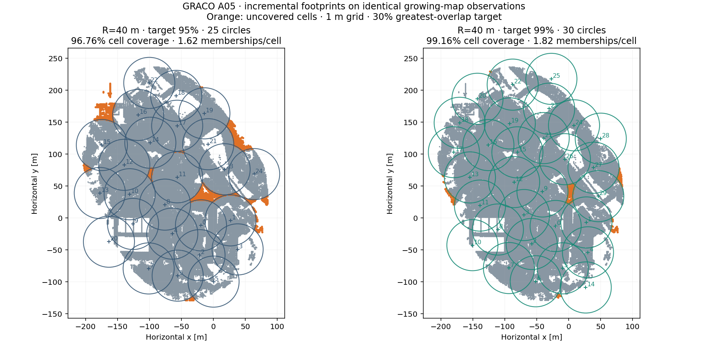

Same 34 causal retained snapshot prefixes, fixed first-snapshot gravity frame, 1 m grid, and 30% ±10 pp greatest-overlap band. Only the required coverage changes.

| Radius | Coverage target | Circles | Lowest prefix coverage | Final cell coverage | Point coverage | Memberships / covered cell | Median greatest overlap | Mean update [ms] | Max update [ms] |
|---|---|---|---|---|---|---|---|---|---|
| 40 m | 95% | 25 | 95.007% | 96.76% | 97.39% | 1.621 | 30.00% | 183.2 | 750.0 |
| 40 m | 99% | 30 | 99.024% | 99.16% | 99.25% | 1.819 | 30.00% | 60.9 | 140.3 |
Every 40 m prefix meets the coverage gate. The final cover uses 30 circles, with 99.16% cell coverage and 97% of circles inside the requested overlap band. The solver proves the candidate-set count on 24/24 triggered updates; 0 greedy fallbacks.
Inspect all 34 chronological 40 m prefixes →
The chronological gallery compares the new 40 m footprints with the original trajectory-centered footprints, which retain their native 80 m radius. The figure above instead compares the two incremental planners.
Times are per-update placement plus cell/overlap diagnostics in one replay each, excluding input I/O, point audits, state I/O and figure rendering. They are not full LiDAR or MapClosures processing times. Bulk geometry and occupancy states remain on 148.
The observed map is the growing union of retained native processed area snapshots, not every original scan. Circle count is certified only within each update’s candidate set when the solver proves it. Old centers remain fixed. Geometry refresh/freeze policy and LiDAR integration are deferred.
Comparison numbers · 40 m summary · All solver/overlap diagnostics · Source and input hashes · 40 m configuration